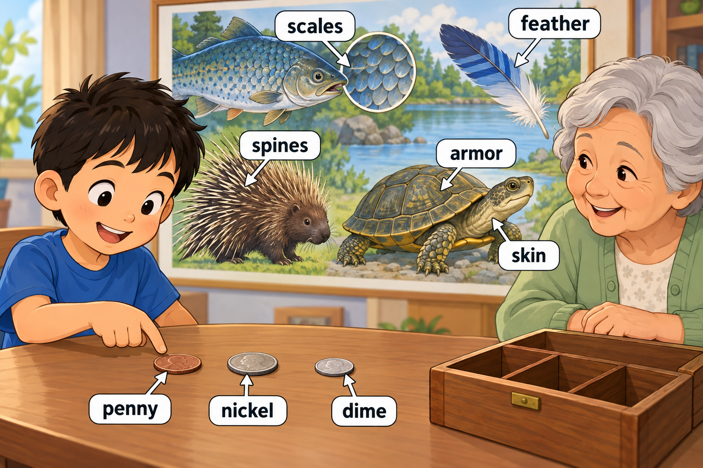

STORY-002 · 第 2 周 · Day 9–14 · 37 个目标词
Miller 忙碌的星期六
Miller's Busy Saturday
每次练习约 5–8 个词，先读英文，再查看中文解释，最后遮住图片复述。点击图片可查看原图。
Scene 1 — A kitchen hug
Day 9

Miller gave Grandma a hug before helping her bake a pie.
They put broccoli and cabbage in the pie.
There was a chile pepper beside the corn and lettuce on the table.
hug, bake, broccoli, cabbage, chile pepper, corn, lettuce.
查看中文解释
Miller 抱了抱奶奶，然后帮她烤馅饼。馅饼里放了西兰花和甘蓝菜，桌上还有辣椒、玉米和生菜。
Scene 2 — Coins and a nature poster
Day 10

In Grandma's coin box, Miller found a penny, a nickel, and a dime.
On a nature poster, a fish had shiny scales, a bird had a soft feather, and a porcupine had sharp spines.
A turtle's shell looked like armor, covering the soft skin underneath.
penny, nickel, dime, scales, feather, spines, armor, skin.
查看中文解释
Miller 在奶奶的硬币盒里找到了三种硬币。动物海报上的鱼鳞闪闪发亮，鸟有柔软的羽毛，豪猪有尖刺。乌龟的壳像盔甲，保护着下面柔软的皮肤。
Scene 3 — A pretend parade
Day 11

Miller joined a pretend army, and the soldiers marched in a parade.
The corporal and sergeant wore stripes on their sleeves and kept in step.
Nobody wanted to stop, but it was time for a snack instead.
joined, army, soldiers, marched, parade, corporal, sergeant, stripes, kept, step, Nobody, wanted, instead.
查看中文解释
Miller 加入了扮演军队的游戏，大家扮成士兵参加游行。下士和军士的袖子上有条纹，他们步伐一致。虽然没人想停下来，但大家该改为吃点心了。
Scene 4 — A boat on the lid
Day 12、Day 13

Back home, Miller fed the ducks and dried his hands.
Then he ran to the toy bin.
A little boat sat on top of the bin's lid.
fed, dried, ran, bin, top, lid.
查看中文解释
回到家，Miller 喂了鸭子并擦干双手。他跑到玩具箱旁，发现一只小船放在箱子盖的上面。
Scene 5 — The little raft
Day 14

Miller took his toy raft to a little stream.
He slid it into the water, but a twig on the raft broke.
Grandma helped him fix it, and the raft floated again.
raft, slid, broke.
查看中文解释
Miller 带着玩具木筏来到小溪边，把它轻轻滑入水中。木筏上的小树枝断了，奶奶帮忙修好后，它又漂了起来。
复述练习
- What is on the table?（说出两种蔬菜。）
- Can you march in step?（边踏步边说 kept in step。）
- What happened to the raft?（用 slid 和 broke 复述最后一个场景。）
选两个目标词造新句。首次练习后第 1、3、7、14 天复习。
开始 Memory Exam → · 可切换到全部故事，或按 Day 练习。
家长词义备注
- scales：用户已确认释义为“鳞片”，本场景恢复第一版的鱼鳞配图和英文句子。Scene 3 的 stripes 指袖子上的条纹。
- penny、nickel、dime：场景只辨认硬币，不计算币值；penny 在英国可指便士，在美国可指一美分硬币。
- kept in step：保持步伐一致；instead：改做另一件事。
- bin：这里是玩具箱；top of its lid：盖子的上面。
- 词表中的 Penny、Scales、Parade 在句中按普通名词写为 penny、scales、parade。
← 返回单词本总览